Color Mapping
Color Mapping Overview
Color mapping (sometimes also called tone mapping) can be used to apply color transformations on the final image colors. Sometimes an image can contain a higher range of colors that can be displayed on a computer screen. Color mapping has the task of re-mapping the image values to be suitable for display purposes.
Color Mapping
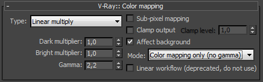 Type - this is the type of transformation used. These are the possible types:
-
Linear multiply - this mode will simply multiply the final image colors based on their brightness without applying any changes.
-
Exponential - this mode will saturate the colors based on their brightness. This can be useful to prevent burn-outs in very bright areas (for example, around light sources, etc.). This mode will clamp colors so that no value exceeds (255, or 1 in floating point value).
-
HSV exponential - this mode is very similar to the Exponential mode, but it will also preserve the color hue and saturation, instead of washing out the color towards white.
-
Intensity exponential - this mode is similar to the Exponential one, but it will preserve the ratio of the RGB color components and will only affect the intensity of the colors.
-
Gamma correction - this mode applies a gamma curve to the colors. In this case, the Dark multiplier is a general multiplier for the colors before they are gamma-corrected. The Bright multiplier is the inverse of the gamma value (i.e. for gamma 2.2, the Bright multiplier must be 0.4545). This is a deprecated mode, do not use it.
-
Intensity gamma - this mode applies a gamma curve to the intensity of the colors, instead of each channel (RGB) independently. This is a deprecated mode, do not use it.
-
Reinhard - this mode is a blend between exponential-style color mapping and linear mapping. If the Burn value is 1.0, the result is linear color mapping and if the Burn value is 0.0, the result is exponential-style mapping.
The default settings for color mapping are such that V-Ray renders out the image in linear space (Reinhard color mapping with Burn value 1.0 produces a linear result).
Dark multiplier - this is the multiplier for dark colors.
Bright multiplier - this is the multiplier for bright colors.
Gamma - this parameter allows the user to control the gamma correction for the output image regardless of the color mapping mode. Note that the value here is the inverse of the one used for the Gamma correction color mapping type. For example, to correct the image for a 2.2-gamma display, you should set the Gamma parameter simply to 2.2.
Sub-pixel mapping - this option controls whether color mapping will be applied to the final image pixels or to the individual sub-pixel samples. In older versions of V-Ray, this option was always assumed to be on, however its default value is now off as this produces more correct renderings, especially if you use the universal settings approach.
Clamp output - if this is on, colors will be clamped after color mapping. In some situations, this may be undesirable: for example, if you wish to antialias HDR parts of the image as well, turn clamping off.
Clamp level - this option specifies the level at which color components will be clamped if the Clamp output option is on.
Affect background - if this is off, color mapping will not affect colors belonging to the background.
Mode - this option replaces the Don't affect colors (adaptation only) option from previous V-Ray versions. The possible valies are:
-
Color mapping and gamma - both color mapping and gamma are burned into the final image. This corresponds to Don't affect colors (adaptation only) set to off in previous V-Ray versions.
-
None - neither color mapping nor gamma are burned into the final image. However, V-Ray will proceed with all its calculations as though color mapping and gamma are applied (e.g. the noise levels will be corrected accordingly). This can be useful, for example, if you know that you will apply some color correction to the image later on, but wish to keep the rendering itself in linear space for compositing purposes. This corresponds to Don't affect colors (adaptation only) set to on in previous V-Ray versions.
-
Color mapping only (no gamma) - only color mapping is burned into the final image, but not the gamma correction. This is the default option. V-Ray will still proceed to sample the image as though both color mapping and gamma are applied, but will only apply the color correction (Linear, Reinhard, etc.) to the final result.
Note that the Clamp output option will have an effect regardless of the value of the Mode option.
Linear workflow - this option is deprecated and will be removed in future versions of V-Ray. When this option is checked V-Ray will automatically apply the inverse of the Gamma correction that you have set in the Gamma field to all VRayMtl materials in your scene. Note: this option is intended to be used only for quickly converting old scenes which are not set up with proper linear workflow in mind. This option is not a replacement for proper linear workflow.
Example: Color Mapping Modes
This example demonstrates the differences between the color mapping modes:
Note: the Sibenik Cathedral model was created by Marko Dabrovic ( http://www.rna.hr ) and was one of the models for the CGTechniques Radiosity competition.
Linear color mapping
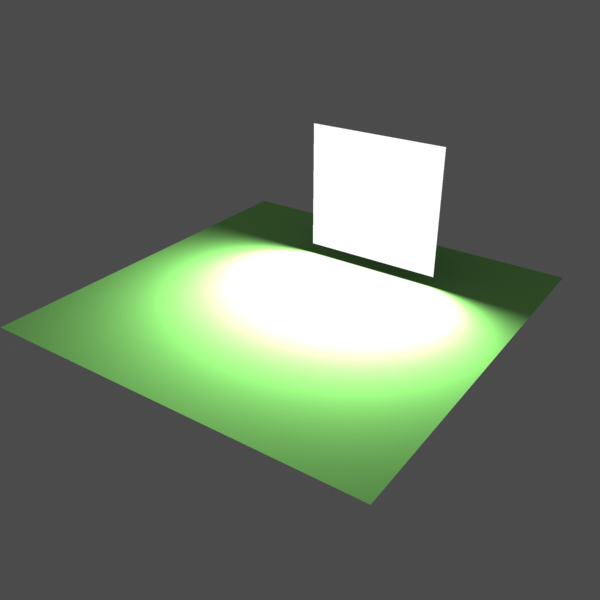
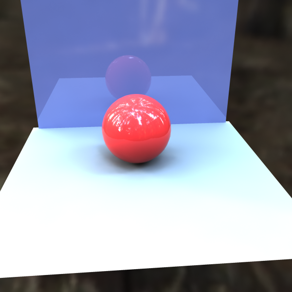
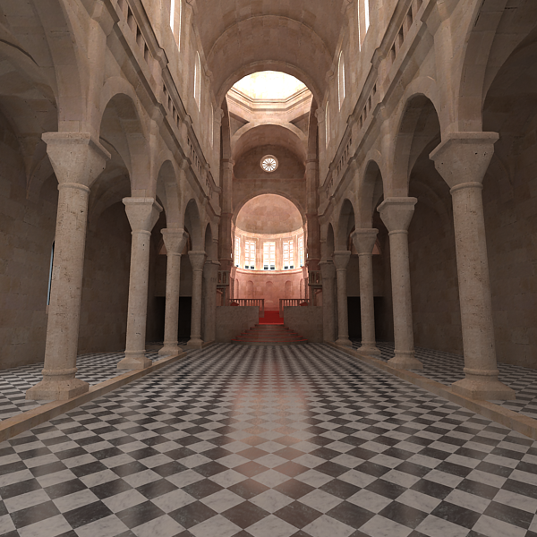
Linear color mapping
Exponential color mapping
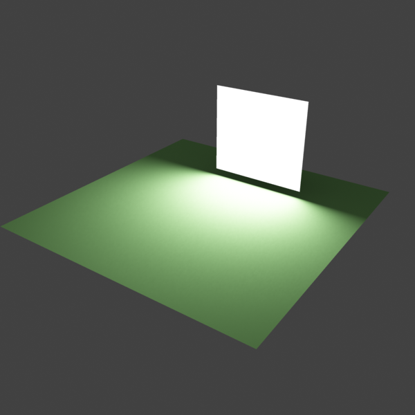
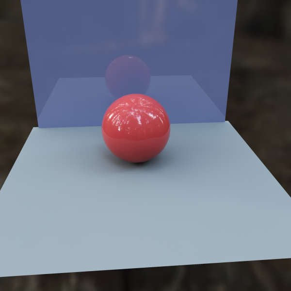
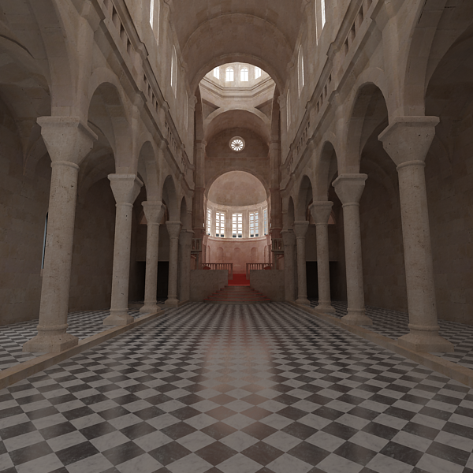
Exponential color mapping
HSV exponential color mapping
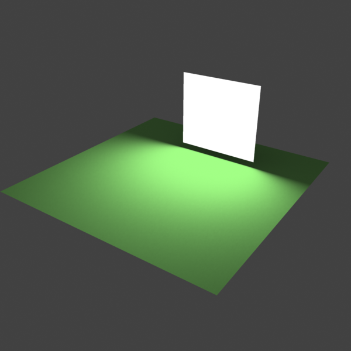
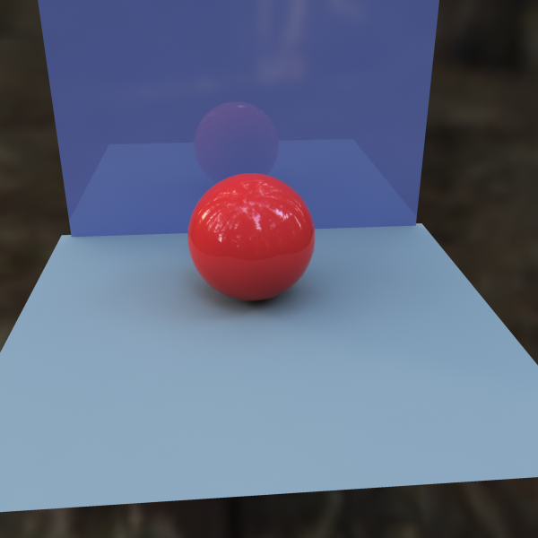
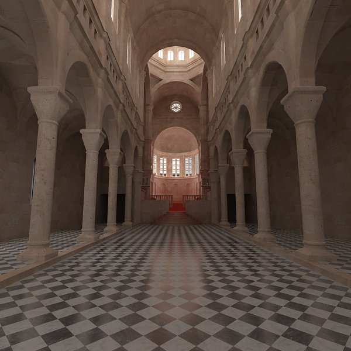
HSV exponential color mapping
As visible in the above images, the Linear mapping method clamps bright colors to white, causing bright parts of the image to appear "burnt out". Both the Exponential and HSV exponential modes avoid this problem. While the Exponential mode tends to wash out the colors and desaturate them, the HSV exponential mode preserves the color hue and saturation.
Example: Linear Work Flow
This example shows the same image rendered with 3 different settings for Gamma and Liner Workflow.
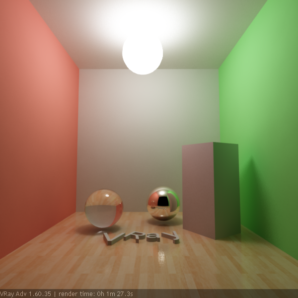
Gamma = 1; Linear Workflow = Off
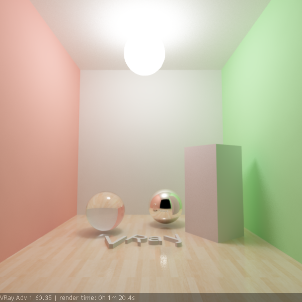
Gamma = 2.2; Linear Workflow = Off
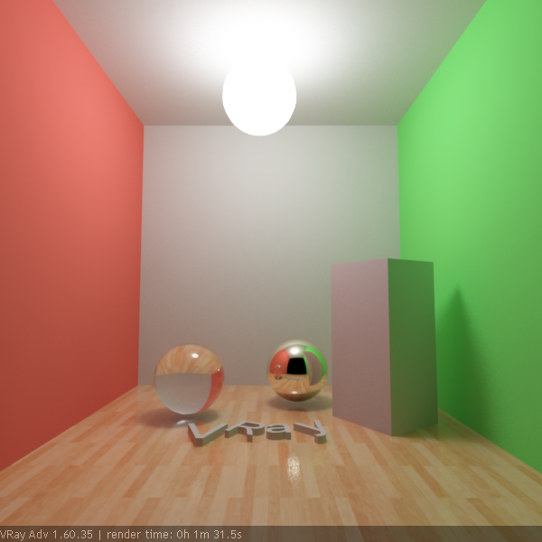
Gamma = 2.2; Linear Workflow = On
Recommended Settings for Proper Linear Workflow
There are different ways to approach a proper linear workflow. Starting from 3ds Max 2014, the simplest and most effective approach is to leave all gamma-related settings in 3ds Max and V-Ray at their default values.